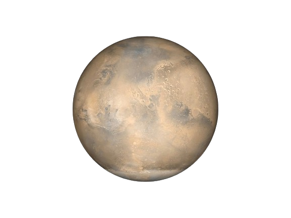

Mars is the fourth planet from the Sun and is often called the "Red Planet" due to its reddish appearance caused by iron oxide on its surface. It is known for its dusty, barren landscape and is the focus of much exploration for potential colonization.
